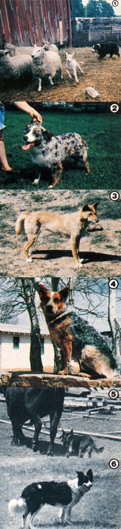

[1] Australian shepherd Topnotch Trampus works the sheep. [2] A blue merle ""Aussie"". [3] Progenitor of many stock dog breeds: a wild dingo. [4] A blue Australian cattle dog surveys its territory. [5] A blue heeler keeps the bovines in line. [6] Border collie Elles Belles.